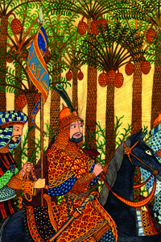
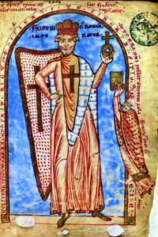

Lezione 8  Crociate
Crociate

-
305
625
-
375
585
-
335
595
-
398
515
-
295
545
EDESSA
Durante la Prima crociata i cristiani conquistano Gerusalemme e creano il Regno di Gerusalemme (che durerà fino al 1244), il Principato di Antiochia (fino al 1268 retto dai Normanni di Sicilia), le Contee di Edessa (retta dai Fiamminghi fino al 1144) e di Tripoli (retta dai francesi fino al 1289).SECONDA CROCIATA
1147- 1149: La Seconda crociata si conclude con un fallimento. È promossa da Bernardo di Chiaravalle, appoggiata dal papa Eugenio II, guidata dal re francese Luigi VII, battuto nel 1148.TERZA CROCIATA
1190-1192: Terza crociata. Vi prendono parte Federico I e Federico II, Riccardo Cuor di Leone, re d’Inghilterra, e Luigi IX il Santo, re di Francia. Dopo la morte di Barbarossa, Riccardo re d’Inghilterra guida la crociata. Non riconquista Gerusalemme, riesce tuttavia a raggiungere un accordo con il Saladino per consentirvi il libero accesso dei pellegrini cristiani.
EGITTO
I vivaci colori e la vegetazione esotica che appaiono in questo ritratto del Saladino (tratto da una miniatura araba del secolo XV) rendono bene l’atmosfera di leggenda che circonda il sultano d’Egitto, che nel 1187 riconquista Gerusalemme cacciandone i crociati. Il Saladino dichiara la Palestina parte del mondo musulmano e Gerusalemme luogo sacro dell’Islam.
TURCHIA
Federico I Barbarossa ritratto in una miniatura del 1188: le insegne di crociato sul petto e sullo scudo sottolineano la sua partecipazione alla Terza crociata, durante la quale muore per annegamento, forse a causa dell’eccessivo peso della sua armatura…